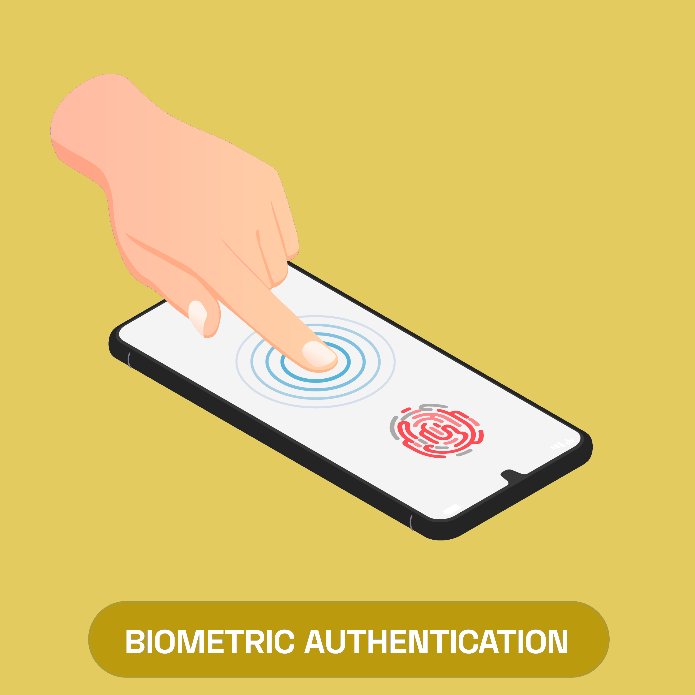

Inleiding

Biometrische identificatie wordt steeds vaker gebruikt in de cybersecurity. Sinds kort hoeven gebruikers niet meer hun wachtwoord in te voeren om hun telefoon te openen, maar kunnen simpelweg hun vinger of gezicht gebruiken. Een vingerafdruk is uniek en daarom een erg bruikbare eigenschap voor cybersecurity. De telefoon gebruikt deze biologische eigenschap om een inlogpoging te authenticeren. Deze techniek wordt op nieuwe telefoonmodellen ook toegepast bij applicaties voor bankieren, notities en andere gevoelig informatie. Biometrie is relatief betrouwbaar en wordt steeds efficienter. Met de huidige technologie zijn een aantal verschillende biometrische methoden te gebruiken.

De iPhone 5 was het eerste mobiele apparaat met een vingerscanner, dat werkte op hetzelfde principe als touchscreen. De huid van mensen is conductief, dat gemeten kan worden door elektrische sensoren op het telefoonscherm. De losse vingerprint scanner bestaat uit duizenden van deze sensoren dichter bij elkaar. Sommige Android toestellen gebruiken een ultrasonische vingerscanner, dat nauwkeurig het relief in de huid kan meten met echolocatie. Dit type sensor kan de vinger door het scherm heen scannen. Deze technologie wordt nu minder gebruikt, omdat gezichtsherkenning efficienter blijkt.

Door innovaties in camera-technologie is gezichsherkenning tegenwoordig op veel mobiele telefoons beschikbaar. Hierbij worden zo'n 30.000 infrarood stippen op het gezicht geprojecteerd, de diepte van deze punten kunnen worden gemeten en verwerkt tot een scan van het gezicht. Deze infrarood stralen zijn niet met het menselijke oog te zien.

Stemherkenning wordt weinig toegepast in beveiliging. Toch is het een biometrische sensor, omdat het een biologische factor waarneemt. Via de microfoon worden de klanken van lettergrepen verzamelt. Aan de hand van een taalmodel verwerkt de telefoon deze data, en zet deze klanken om in woorden. Deze technologie wordt vooral gebruikt door virtual assistants, die alleen een voice-input hebben.